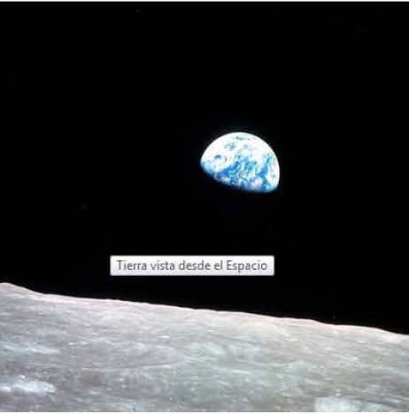

La exploración espacial designa los esfuerzos del hombre en estudiar el espacio y sus astros desde el punto de vista científico y de su explotacin econmica.
Estos esfuerzos pueden involucrar tanto seres humanos viajando en naves espaciales como satlites con recursos de telemetría o sondas teleguiadas enviadas a otros planetas (orbitando o aterrizando en la superficie de estos cuerpos celestes).
Las personas que pilotan naves espaciales, o son pasajeros en ellas, se llaman astronautas (en Rusia:
cosmonautas; en China:
taikonautas). Tcnicamente se considera astronauta a todo aquel que emprenda un vuelo sub-orbital (sin entrar en rbita) u orbital a como mnimo 100 km de altitud (considerado el lmite externo de la atmsfera).

El cielo siempre ha atrado la atencin y los sueos del hombre. Ya en 1634 se public la que se considera primera novela de ciencia ficcin,
Somnium, de
Johannes Kepler, que narra un hipottico viaje a la Luna. Ms tarde, en 1865, en una famosa obra de ficcin titulada
"De la Terre la Lune",
Julio Verne escribe sobre un grupo de hombres que viaj hasta la Luna usando un gigantesco can.